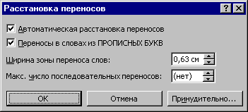

Для установки режима автоматической расстановки переносов воспользуйтесь подкомандой Расстановка переносов команды Язык меню Сервис и взведите флажок "Автоматическая расстановка переносов".

Для отмены режима автоматической расстановки переносов сбросьте этот флажок.
Назад | Содержание | Вперед